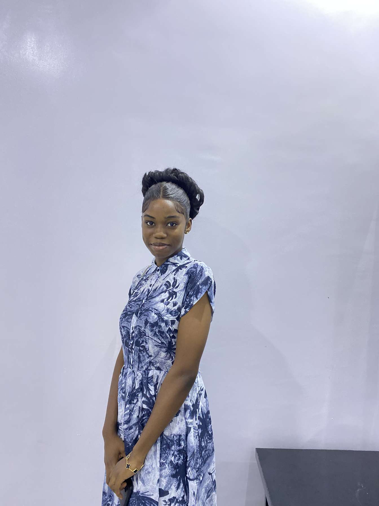

Oladele Blessed | WDD 130

Hi, I am Oladele Blessed from Nigeria. I enjoying listening to messages and audio Bible, coding and watching animations (cartoons, anime, etc).

Hi, I am Oladele Blessed from Nigeria. I enjoying listening to messages and audio Bible, coding and watching animations (cartoons, anime, etc).